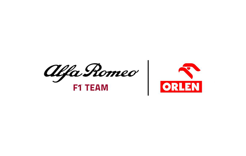

Alfa Romeo Sauber

Alfa Romeo ha participado como una escudería de Fórmula 1 en diferentes periodos. Antes de su retorno como equipo constructor en 2019, tras renombrar la estructura
de Sauber y asumir la licencia suiza, participó en los campeonatos de las temporadas 1950, 1951 y entre 1979 y 1985 como escudería italiana. Sus éxitos se dieron
principalmente antes del establecimiento del Campeonato del Mundo y en los dos primeros años de este, no consiguiendo en su vuelta reverdecer los laureles. Ya en los
años 1920, algunos Alfa competían en los circuitos europeos y bien pronto se constituyó un equipo oficial de la marca dirigido por el propio Nicola Romeo, en el que
corrieron grandes pilotos de la época como Giuseppe Campari, Ugo Sivocci, Antonio Ascari, Enzo Ferrari, Gastone Brilli-Peri o Louis Wagner.
Orígenes
Los Alfetta volvieron a la carga cuando en 1950 se organizó el primer Campeonato Mundial. El equipo Alfa formado por Farina, Fagioli y el argentino Juan Manuel Fangio
(el equipo de las tres F) dominó la temporada como nunca se había hecho. De nuevo los números son categóricos, de las seis carreras puntuables
(exceptuando Indianápolis) los Alfa Romeo ganaron las seis, obtuvieron las seis vueltas rápidas y las seis poles, un triplete y dos dobletes. Además participaron en
otras cinco carreras en las cuales Fangio venció en tres ocasiones (San Remo, Naciones y Pescara) y Farina en las otras dos (Bari y BRDC). Al final el título se lo
llevó el italiano Giuseppe Farina.
El campeonato de 1951 no fue tan arrollador a pesar de que el nuevo Alfetta 159 superaba en prestaciones al 158 (400 CV) pero su mayor peso y sobre todo la aparición
del veloz Ferrari 375 (con motor de 12 cilindros en V y 4500 cc diseñado por Aurelio Lampredi) acabó con la imbatibilidad de los Alfa Romeo. Tras las victorias de
Fangio (Suiza y Francia) y Farina (Bélgica) en el G.P. de Gran Bretaña en Silverstone, el piloto argentino José Froilán González colocaba su Ferrari 375 por delante
del Alfetta de su compatriota Fangio. Las posteriores victorias del Ferrari de Ascari en Alemania e Italia dejaban la resolución del campeonato para la última carrera
en España en el circuito de Pedralbes. La mala elección de neumáticos de Ascari y la buena organización del equipo Alfa dio al final la victoria a Fangio que salvó en
última instancia el honor de la marca. 4 victorias, 7 vueltas rápidas, 4 poles y 3 victorias no puntuables fue el balance de una buena temporada que puso broche de
oro a la participación de los Alfetta en la Fórmula 1. El fracaso de las gestiones para recibir una subvención del gobierno italiano y sobre todo la amenaza real de
los Ferrari y los nuevos BRM convenció a la dirección de Alfa a retirar sus monoplazas de la competición.
Durante la década de 1960, aunque la compañía no tenía presencia oficial en la máxima categoría del automovilismo, varios equipos de Fórmula 1 usaron motores Alfa
Romeo desarrollados independientemente para impulsar sus autos.